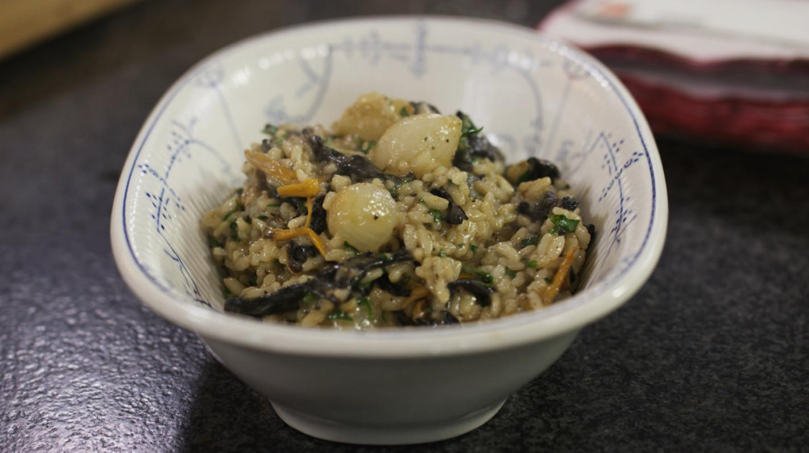

Risotto

Beschrijving
Als het aanbod aan bospaddenstoelen groot is, dan kan je ze verwerken in een
smeuïge risotto. Dit gerecht is vegetarisch, maar daar zal zelfs de grootste
liefhebber van vlees geen moeite mee hebben. Wie dat wenst kan ook kippenbouillon
gebruiken in deze bereiding en je kunt er ook gebakken
spekjes aan toe voegen. Het is geen must,
enkel een optie om iedereen te plezieren.
Ingredienten
- groentebouillon 6 deciliters
- sjalotten 2
- look 1 teentje
- risottorijst (bv. Vialone Nano, Arborio,...)240 g
- verse zilveruitjes (of diepgevroren) 250 g
- boter
- 1 eetlepel
- gemengde bospaddenstoelen 300 g
- bladpeterselie 1 bussel
- boter 60 g
- Parmezaanse kaas 80 g
- peper
- zout
Step by step
Risotto
- Ontdooi of bereid verse groentebouillon volgens het
basisrecept.
- Pel de sjalotten en snipper ze fijn. Plet de look
tot pulp met het lemmet van je koksmes.
- Verhit een ruime stoofpot op een matig vuur. Schenk er
een scheutje olijfolie in. Stoof de snippers sjalot en
de geplette look in de hete olie.
- Voeg er na een paar minuten de rijst bij en laat die heel
kort meebakken. Schenk vervolgens 3/4 van de bouillon
bij de rijst. Doe dit in de verhouding: 1/3 rijst
+ 2/3 kookvocht.
- Zet het deksel op de pot en laat de rijst garen op
een zacht vuur. Roer niet in de rijst. Controleer wel of
je een schepje bouillon extra moet toevoegen. Werk intussen
aan de bereiding van de zilveruitjes en de
paddenstoelen.
De zilveruitjes en de boschampignons
- Leg de verse zilveruitjes te week in een potje met warm
kraantjeswater. Een half uur later zullen de uitjes
makkelijker gepeld kunnen worden. Pel de uitjes en let
erop dat je ook het fijn vliesje verwijdert dat rond elk
uitje zi
- Neem een kleine diepe pan en smelt er een klontje boter
in. Stoof de uitjes in de bruisende boter en voeg
tussendoor een lepel suiker toe. Roer en ‘glaceer’ de
uitjes zonder de suiker te laten karameliseren.
- Schep na enkele minuten de bouillon bij de geglaceerde
zilveruitjes. Kook ze gaar op een zacht vuur. Dit duurt
ongeveer 10 minuten. Laat de uitjes nadien uitlekken.
- ‘Haal het bos uit de boschampignons!’ Kortom, maak ze
voorzichtig schoon met een vodje of borsteltje en
verwijder restjes aarde. Snij ook houtachtige
stukjes steel af. Hele grote paddenstoelen kan je in
stukken scheuren of snijden.
- Spoel de bladpeterselie schoon en laat het groen
uitlekken. Snipper de blaadjes fijn.
- Verhit een ruime pan op een stevig vuur. Smelt er
een klontje boter in. Bak de paddenstoelen kort en
krachtig in de pan. Voeg na een minuut de zilveruitjes
toe.
De afwerking
- Neem de flinke klont boter erbij om de risotto af te
werken. Doe de boter bij de warme rijst. Roer pas
in de rijst zodra de boter gesmolten is. Gebruik bij
voorkeur een zachte pannenlikker, die de rijstkorrels
in mogelijk beschadigt.
- Rasp de Parmezaanse kaas fijn. Schep de gemalen kaas,
bakken boschampignons en de snippers peterselie door de
rijst. Nu krijg je een rijkelijke smeuïge risotto.
- Proef het resultaat en kruid de risotto met boschampignonsnaar
smaak met wat zout en peper van de molen. Overdrijf niet
want de kaas heeft al een redelijk zoute ‘bijdrage’
geleverd.
- Serveer de risotto in een diep bord.